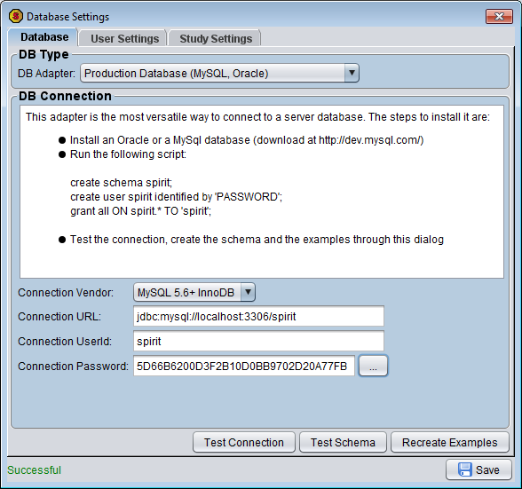
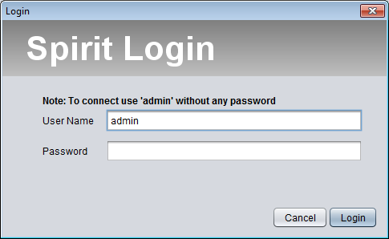

Spirit is released under the GPLv3 license. The software is therefore open-source and free to use, as long as any modification to the source code will be exclusively for your sole purpose, or released within the terms of the license. Any commercial sale (standalone or as part of a package) is forbidden. Spirit is made available to the community is delivered without any warranty, as expressed by the terms of this disclaimer It is implied that you agree with the terms of the license and the disclaimer, if you decide to install and use this software.
If you have a Windows Operating system, run the installer:
Spirit-2.1.5.exe
For any Operating System.
Java 8+ must be installed to open this file:
Spirit Webstart
For advanced users or to install it in a production environment:
Spirit-bin.2.1.5.zip
Requirements
- Operating System
- Spirit, being entirely written in Java, can run on any operating systems. It has been tested on Windows, MacOS, Linux.
- Java
- You must have the Java JRE 1.8+ installed, which should already have been installed on your operating system. If not, please download the latest version of Java
-
- Database
- Spirit comes preinstalled with the HyperSQL Database, but it can work with the following relational databases:
- HyperSQL: is a light-weight open source Java database. It comes by default with Spirit and does not need any installation. You can choose between the default standalone mode (single user) or the server mode (several users). Because it lacks some administrative features, it is not adviced to use in a large scale production environment.
- MySQL: is a proven open-source database for production, which can be downloaded on http://www.mysql.com. Spirit has been tested on MySQL 5.6+
- Oracle: is a commercial database. Spirit has been tested on Oracle 10g+
Spirit advanced installation
There are different ways to install Spirit depending of your needs. An external database can be configured as shown in the next section.- Option 1: local installation of Spirit through a Windows installer
-
This is the simplest option
- Download and execute the Exe installer, to have the application and its shortcut installed. Be sure to accept to run the installer even if Windows complain about the application not being secure.
- Execute spirit.exe
- Option 2: local installation of Spirit
-
It is possible to access Spirit without installing the program on your drive. The advantages is that you will always run the latest version, but the disadvantage is that you will have no control on the updates (this option is therefore not recommended).
- Install Java JRE if you don't have it already
- Execute the Spirit webstart version, a shortcut will be created for
- Option 3: server installation of Spirit
-
To have a fixed version of Spirit, the best is to download the binaries and to run the program on those binaries. You need the help of an IT specialist for the server installation.
- Install Java JRE if you don't have it already
- Download the latest release of Spirit-bin from GitHub
- Unzip it somewhere on your webserver. If you have Tomcat installed, you can copy the spirit folder under webapp.
- Edit the file "spirit.jnlp" and replace the second line:
codebase="https://jfreyss.github.io/spirit/webstart/spirit-bin"
by:
codebase="{http://YourServer:port}/spirit/spirit-bin". - Test the installation by typing {http://YourServer:port}/spirit/" into your browser
- Configure an external database as shown in the next section.
Database configuration
Hypersonic SQL
The Hypersonic SQL database is a Java database, which comes by default with Spirit. It is good for testing or working with small data. It is nevertheless not advised to use it in productive environment (no backup, lack of administrative features).
The first time you start Spirit, a local Hypersonic DB is created by default and you can immediately start working.
No configuration settings are needed.
MySQL
- Download MySQL on https://www.mysql.com/downloads/
- Connect to MySQL and and run the following script:
create schema spirit; create user spirit identified by 'PASSWORD'; grant all ON spirit.* TO 'spirit';
- The schema 'spirit' is mandatory
- The user 'spirit' can be changed and the password needs to be replaced by the password of your choice.
- All rights have to be granted on the spirit schema to the spirit user, at least until the tables are created.
- Open Spirit and select "Database Settings" in the "Admin" menu, to open this dialog.
- Change the DB Adapter to use the "Production Database"
- Change the connection vendor to MySQL
- Replace the connection url to "jdbc:mysql://localhost:3306/spirit" (replace localhost to the IP/DNS of the MySQL server)
- Enter the userId and the password, you used to configure the 'spirit' schema. To enter the password, click the "..." to encrypt it.
- Click 'Test Connection': this should be successful. If not make sure all previous steps were done correctly
- Click 'Save'.
- Since the database is empty, the tables will automatically be created, a set of biotypes/test and some examples will be imported.
{kind=link}
Oracle
Work in progressUser configuration
 The first time you login, the only available user is "admin" without any password. The login dialog displays this warning until you create some new users.
{kind=link}
To create new users, login as an administrator and select "Edit Users/Groups" in the "Admin" menu, as explained in the admin guide